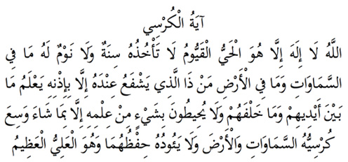

2

Ayete’l-Kürsî
Anlamı: “Allah! Evet, ondan başka ilah yoktur. O Hayy ve Kayyûmdur. Onu ne uyuklama hali ne de uyku tutar. Göklerde ve yerde olan her şey onundur. Onun izni olmadan onun yanında kim şefaat edebilir? O herkesin geçmişini ve geleceğini bilir. Dilediği kadarı hariç, Onun ilminden hiçbir şeye kimse takat getiremez. Onun Kürsüsü gökleri de yeri de kuşatmıştır. Onları korumak O’na ağır gelmez. O Aliy ve Azîm’dir”.
Hayy, diri ve hayatta olan; Kayyûm ise, sürekli ayakta olan, yatıp uyumayan, yaratıkların her işini elinde tutan, kayyûm demektir. Aliyy, makamıyla yüce olan, Azîm de azametiyle yüce olan demektir.
Kürsü, bildiğimiz kürsüdür. Ancak Allah hiçbir yaratılana benzemez, insan gibi bir yerde oturmaz. Onun mekâna ihtiyacı yoktur. Bu sebeple kürsü ile neyin kastedildiğini biz bilemeyiz. Ona olduğu gibi inanırız.